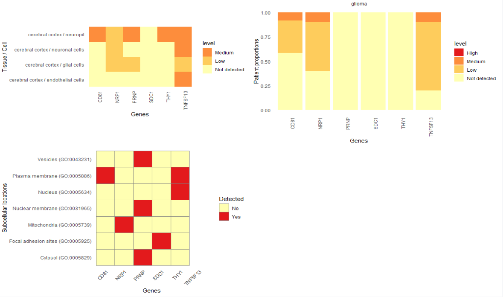

03_HPAanalyze_case_query.RmdThe Human Protein Atlas web interface provides a powerful way to search using specific parameters. For example, you can find proteins predicted to be secreted, expressed at low level in normal breast tissue and are predictors of poor prognosis in breast cancer. The good news: you can combine the results of your queries with HPAanalyze for easy explanatory data analysis and data retrieval of your proteins of interest. Here is how.
Have a specific goal in mind. What are you looking for? In this example, I will look for CD markers that have low expression in the cerebral cortex and correlate with unfavorable prognosis in glioma.
Build your query. The most intuitive way is to click on the “Fields >>” button and use the drop-down menus.
The ‘Fields >>’ button.
Build your query with the drop-down menus.
Click the ‘Search’ button.
?format=tsv to your search link.)Copy the link to the tsv file.
## The link to your query tsv
my_hpa_query <- "https://www.proteinatlas.org/search/protein_class%3ACD+markers+AND+normal_expression%3ACerebral+cortex%3BAny%3BNot+detected%2CLow+AND+prognostic%3AGlioma%3BUnfavourable?format=tsv"
## Create a temporary file as destination for the download
temp <- tempfile("query", fileext=c(".tsv.gz"))
## Download to the temporary file
download.file(url=my_hpa_query, destfile = temp, method = "curl", mode = "wb")
## read the file into a data frame
query_df <- readr::read_tsv(temp)
## Unlink the temp file
unlink(temp)Note: If you have problem downloading file in R (step 5), you can workaround by manually download the tsv.gz file from your browser, unzip with 7zip or WinRAR and import the resulting tsv file.
You will end up with a data frame that looks like this.
tibble::glimpse(query_df)
#> Observations: 6
#> Variables: 22
#> $ Gene <chr> "CD81", "NRP1", "PRNP", "SDC1", "THY...
#> $ `Gene synonym` <chr> "TAPA-1, TAPA1, TSPAN28", "CD304, NR...
#> $ Ensembl <chr> "ENSG00000110651", "ENSG00000099250"...
#> $ `Gene description` <chr> "CD81 molecule", "Neuropilin 1", "Pr...
#> $ Chromosome <dbl> 11, 10, 20, 2, 11, 17
#> $ Position <chr> "2376177-2397419", "33177492-3333626...
#> $ `Protein class` <chr> "CD markers, Disease related genes, ...
#> $ Evidence <chr> "Evidence at protein level", "Eviden...
#> $ Antibody <chr> "CAB002507, HPA007234", "CAB004511, ...
#> $ `Reliability (IH)` <chr> "Supported", "Approved", "Enhanced",...
#> $ `Reliability (Mouse Brain)` <lgl> NA, NA, NA, NA, NA, NA
#> $ `Reliability (IF)` <chr> "Supported", "Uncertain", "Approved"...
#> $ `Subcellular location` <chr> "Plasma membrane", "Mitochondria", "...
#> $ `Prognostic p-value` <chr> "Glioma:5.12e-5 (unfavourable), Panc...
#> $ `RNA cancer category` <chr> "Expressed in all", "Expressed in al...
#> $ `RNA tissue category` <chr> "Expressed in all", "Expressed in al...
#> $ `RNA TS` <lgl> NA, NA, NA, NA, NA, NA
#> $ `RNA TS TPM` <chr> NA, NA, NA, "esophagus: 250.7;skin: ...
#> $ `TPM max in non-specific` <chr> "seminal vesicle: 2273.0", "placenta...
#> $ `RNA cell line category` <chr> "Cell line enhanced", "Cell line enh...
#> $ `RNA CS` <lgl> NA, NA, NA, NA, NA, NA
#> $ `RNA CS TPM` <chr> "ASC diff: 2031.3", "U-87 MG: 437.4"...The data frame itself is somewhat informative, and is adequate if you want to see a summary of the data. However, it also provides you with a list of proteins in both “gene name” and “ensembl id” formats which you can use with HPAanalyze functions.
You can use the gene names in the list to visualize HPA data with the hpaVis function family. No special adjustment is needed.
## since the query give you the latest HPA version, get the latest datasets to match
latest_datasets <- hpaDownload()
hpaVis(data = latest_datasets,
targetGene = query_df$Gene,
targetTissue = "cerebral cortex",
targetCancer = "glioma")
Similarly, you can extract the information you want from relevant xml files using lapply on the ensembl ids. With some trickery, you can even create a tidy data frame from the extracted information, as shown below. Now you can analyze the way you want.
## Download and import the xml files for proteins of interest
query_xml_list <- lapply(query_df$Ensembl, hpaXmlGet)
## Extract protein classes as a list of data frame
query_protein_classes <- lapply(query_xml_list, hpaXmlProtClass)
names(query_protein_classes) <- query_df$Gene # name list items
## Turn the list into a data frame
query_protein_classes_df <-
tidyr::unnest(tibble::enframe(query_protein_classes, name = "protein"))
glimpse(query_protein_classes_df)
#> Observations: 122
#> Variables: 5
#> $ protein <chr> "CD81", "CD81", "CD81", "CD81", "CD81", "CD81", "CD81"...
#> $ id <chr> "Cd", "Ja", "Jf", "Ma", "Md", "Me", "Mf", "Mg", "Mh", ...
#> $ name <chr> "CD markers", "Transporters", "Accessory Factors Invol...
#> $ parent_id <chr> NA, NA, "Ja", NA, NA, NA, NA, NA, NA, NA, NA, NA, NA, ...
#> $ source <chr> "UniProt", "TCDB", "TCDB", "MDM", "MDM", "MEMSAT3", "M...
## Which proteins in our list are also potential drug targets?
filter(query_protein_classes_df, name == "Potential drug targets")
#> # A tibble: 2 x 5
#> protein id name parent_id source
#> <chr> <chr> <chr> <chr> <chr>
#> 1 CD81 Pd Potential drug targets <NA> HPA
#> 2 PRNP Pd Potential drug targets <NA> HPAIt is even more impressive when you extract patient’s detail of multiple genes using hpaXmlTissueExpr. You can match samples from the same patient across multiple antibodies and proteins. However, it will take a little bit more work than the above example, so I will leave it to you to explore these hidden potentials."
Anh Tran, 2018
Please cite: Tran AN, Dussaq AM, Kennell T, Willey C, Hjelmeland A. HPAanalyze: An R Package that Facilitates the Retrieval and Analysis of The Human Protein Atlas Data. bioRxiv 355032; doi: https://doi.org/10.1101/355032